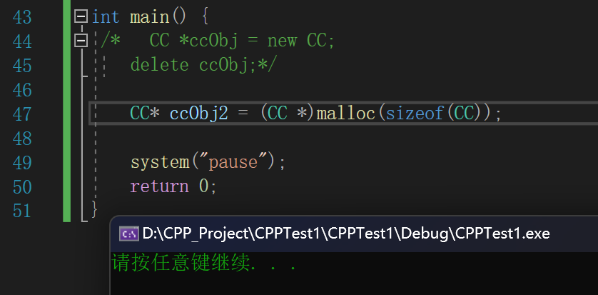
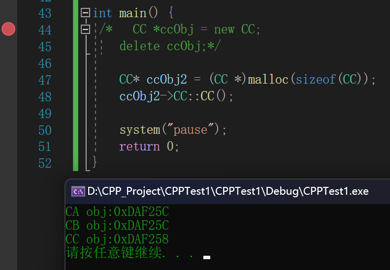

函数与对象总结
成员函数和全局函数
cb1Obj.testCB(110);
00A8195F push 6Eh // 传递参数
00A81961 lea ecx,[cb1Obj] // thiscall 把对象用 ecx 传递，给类内用作 this 指针
00A81964 call CB::testCB (0A81497h)
func(&cb1Obj, 110);
00A81969 push 6Eh // 传递参数
00A8196B lea eax,[cb1Obj] // 把对象地址取出放入 eax 寄存器
00A8196E push eax // 把 eax 压栈，作为参数 _cdecl
00A8196F call func (0A81492h)
00A81974 add esp,8 // 平栈
#include <iostream>
#include <Windows.h>
using namespace std;
class CB {
public:
int nCB1;
void testCB(int nNum) {
nCB1 += nNum;
}
};
void func(CB *obj, int nNum) {
obj->nCB1 += nNum;
}
int main() {
CB cb1Obj;
cb1Obj.testCB(110);
func(&cb1Obj, 110);
printf("cb1Obj.testCB: 0x%X\r\n", &CB::testCB);
printf("func: 0x%X\r\n", func);
system("pause");
return 0;
}
是否使用指针
- 使用指针可能会产生多态
#include <iostream>
#include <Windows.h>
using namespace std;
class CB {
public:
int nCB1;
virtual void testCB() {
cout << "testCB" << endl;
}
};
int main() {
CB cb1Obj;
cb1Obj.testCB();
CB* pCB = new CB;
pCB->testCB();
system("pause");
return 0;
}
不会产生多态，因此没有必要去访问虚函数表，动态寻址，直接访问固定地址
cb1Obj.testCB();
007B2527 lea ecx,[cb1Obj] // this
007B252A call CB::testCB (07B14C9h)
----------
在可能会产生多态的情况下，使用虚表指针，需要在虚函数表里面查找函数地址进行调用
pCB->testCB();
005A27BE mov eax,dword ptr [ebp-1Ch]
005A27C1 mov edx,dword ptr [eax]
005A27C3 mov esi,esp
005A27C5 mov ecx,dword ptr [ebp-1Ch]
005A27C8 mov eax,dword ptr [edx]
005A27CA call eax
005A27CC cmp esi,esp
005A27CE call 005A12F3
- 虚函数内调用虚函数 -- 隐式
this - this 指针调用虚函数 -- 显示
this - 类内
:: 作用域下调用虚函数 -- 类内函数的固定地址 静态成员函数【属于类，不属于对象】 -- 类内函数的固定地址，不管是否使用指针访问
`cb1Obj.testCB3();006E2797 call CB::testCB3 (06E14E7h)`
pCB->testCB3(); 006E27DB call CB::testCB3 (06E14E7h)
testCB2();
00DA1EC3 mov eax,dword ptr [ebp-8] // ebp-8 == this
00DA1EC6 mov edx,dword ptr [eax]
00DA1EC8 mov esi,esp
00DA1ECA mov ecx,dword ptr [ebp-8]
00DA1ECD mov eax,dword ptr [edx+4]
00DA1ED0 call eax
00DA1ED2 cmp esi,esp
00DA1ED4 call 00DA12F3
this->testCB2();
00DA1ED9 mov eax,dword ptr [ebp-8]
00DA1EDC mov edx,dword ptr [eax]
00DA1EDE mov esi,esp
00DA1EE0 mov ecx,dword ptr [ebp-8]
00DA1EE3 mov eax,dword ptr [edx+4]
00DA1EE6 call eax
00DA1EE8 cmp esi,esp
00DA1EEA call 00DA12F3
CB::testCB2();
00DA1EEF mov ecx,dword ptr [ebp-8]
00DA1EF2 call 00DA14E2
#include <iostream>
#include <Windows.h>
using namespace std;
class CB {
public:
int nCB1;
virtual void testCB1() {
cout << "testCB1" << endl;
testCB2();
this->testCB2();
CB::testCB2();
}
virtual void testCB2() {
cout << "testCB2" << endl;
}
static void testCB3() {
cout << "testCB3" << endl;
}
};
int main() {
CB cb1Obj;
cb1Obj.testCB3();
CB* pCB = new CB;
pCB->testCB3();
system("pause");
return 0;
}
编译器 vcall
#include <iostream>
#include <Windows.h>
using namespace std;
class CB {
public:
int nCB1;
virtual void testCB1() {
printf("CB vir testCB1 this:0x%X\r\n", this);
}
virtual void testCB2() {
printf("CB vir testCB2 this:0x%X\r\n", this);
}
static void testCB3() {
printf("CB static testCB3\r\n");
}
};
int main() {
CB* pCB = new CB;
pCB->testCB1();
pCB->testCB2();
printf("CB vir testCB1 :0x%X\r\n", &CB::testCB1);
printf("CB vir testCB1 :0x%X\r\n", &CB::testCB2);
system("pause");
return 0;
}
printf("CB vir testCB1 :0x%X\r\n", &CB::testCB1);
00F41ABF push offset CB::`vcall'{0}' (0F414F6h)
00F41AC4 push offset string "CB vir testCB1 :0x%X\r\n" (0F49EDCh)
00F41AC9 call _printf (0F414ECh)
00F41ACE add esp,8
----------
CB vir testCB1 this:0xBDFC60
CB vir testCB2 this:0xBDFC60
CB vir testCB1 :0xF414F6
CB vir testCB1 :0xF41500
请按任意键继续. . .
类的构造过程
单继承
- 地址都一样，因为共用空间。
#include <iostream>
#include <Windows.h>
using namespace std;
class CA {
public:
CA() {
printf("CA obj:0x%X\r\n", this);
}
};
class CB : public CA{
public:
CB() {
printf("CB obj:0x%X\r\n", this);
}
};
class CC : public CB{
public:
CC() {
printf("CC obj:0x%X\r\n", this);
}
};
int main() {
CC ccObj;
system("pause");
return 0;
}
CA obj:0x6FF743
CB obj:0x6FF743
CC obj:0x6FF743
请按任意键继续. . .
构造函数过程
CC ccObj;
00261A5F lea ecx,[ccObj] // 把对象地址作为 this 指针传入 ecx 中，传入类内
00261A62 call CC::CC (026150Fh) // 调用 CC 构造函数~
----------
0026150F jmp CC::CC (0261BF0h) // 跳转表
----------
class CC : public CB{
public:
CC() {
00261BF0 push ebp
00261BF1 mov ebp,esp
00261BF3 sub esp,0CCh
00261BF9 push ebx
00261BFA push esi
00261BFB push edi
00261BFC push ecx
00261BFD lea edi,[ebp-0Ch]
00261C00 mov ecx,3
00261C05 mov eax,0CCCCCCCCh
00261C0A rep stos dword ptr es:[edi]
00261C0C pop ecx
00261C0D mov dword ptr [this],ecx // 将 exc （对象地址）放入 this 指针（成员变量）
00261C10 mov ecx,offset _80A111C0_CPPTest1@cpp (026F0F2h)
00261C15 call @__CheckForDebuggerJustMyCode@4 (0261406h)
00261C1A mov ecx,dword ptr [this] // thiscall ecx 给 CB 一个自己的子对象
00261C1D call CB::CB (0261442h) // 调用 CB 的构造函数
printf("CC obj:0x%X\r\n", this);
00261C22 mov eax,dword ptr [this]
00261C25 push eax
00261C26 push offset string "CC obj:0x%X\r\n" (0269EC0h)
00261C2B call _printf (02614ECh)
00261C30 add esp,8
}
00261C33 mov eax,dword ptr [this]
00261C36 pop edi
00261C37 pop esi
00261C38 pop ebx
00261C39 add esp,0CCh
00261C3F cmp ebp,esp
00261C41 call __RTC_CheckEsp (02612F3h)
00261C46 mov esp,ebp
00261C48 pop ebp
00261C49 ret
----------
00261442 jmp CB::CB (0261FA0h)
F11 跟进 CB，逻辑和结构基本与 CC 的一致
----------
class CB : public CA{
public:
CB() {
00261FA0 push ebp
00261FA1 mov ebp,esp
00261FA3 sub esp,0CCh
00261FA9 push ebx
00261FAA push esi
00261FAB push edi
00261FAC push ecx
00261FAD lea edi,[ebp-0Ch]
00261FB0 mov ecx,3
00261FB5 mov eax,0CCCCCCCCh
00261FBA rep stos dword ptr es:[edi]
00261FBC pop ecx
00261FBD mov dword ptr [this],ecx
00261FC0 mov ecx,offset _80A111C0_CPPTest1@cpp (026F0F2h)
00261FC5 call @__CheckForDebuggerJustMyCode@4 (0261406h)
00261FCA mov ecx,dword ptr [this]
00261FCD call CA::CA (026150Ah) // 调用 CA 的构造函数
----------
0026150A jmp CA::CA (0261B90h)
----------
class CA {
public:
CA() {
00261B90 push ebp
00261B91 mov ebp,esp
00261B93 sub esp,0CCh
00261B99 push ebx
00261B9A push esi
00261B9B push edi
00261B9C push ecx
00261B9D lea edi,[ebp-0Ch]
00261BA0 mov ecx,3
00261BA5 mov eax,0CCCCCCCCh
00261BAA rep stos dword ptr es:[edi]
00261BAC pop ecx
00261BAD mov dword ptr [this],ecx
00261BB0 mov ecx,offset _80A111C0_CPPTest1@cpp (026F0F2h)
00261BB5 call @__CheckForDebuggerJustMyCode@4 (0261406h)
printf("CA obj:0x%X\r\n", this);
00261BBA mov eax,dword ptr [this]
00261BBD push eax
00261BBE push offset string "CA obj:0x%X\r\n" (0269B30h)
00261BC3 call _printf (02614ECh)
00261BC8 add esp,8
}
00261BCB mov eax,dword ptr [this] // 按照调用约定，eax、rax 都是返回值，所以将 this 指针放到 eax 进行返回
00261BCE pop edi
00261BCF pop esi
00261BD0 pop ebx
00261BD1 add esp,0CCh
00261BD7 cmp ebp,esp
00261BD9 call __RTC_CheckEsp (02612F3h)
00261BDE mov esp,ebp
00261BE0 pop ebp
00261BE1 ret // 返回到 CB 中
析构函数过程
#include <iostream>
#include <Windows.h>
using namespace std;
class CA {
public:
CA() {
printf("CA obj:0x%X\r\n", this);
}
~CA() {
printf("CA~\r\n");
}
};
class CB : public CA{
public:
CB() {
printf("CB obj:0x%X\r\n", this);
}
~CB() {
printf("CB~\r\n");
}
};
class CC : public CB{
public:
CC() {
printf("CC obj:0x%X\r\n", this);
}
~CC() {
printf("CC~\r\n");
}
};
int main() {
CC *ccObj = new CC;
delete ccObj;
system("pause");
return 0;
}
delete ccObj;
00CB1DAD mov eax,dword ptr [ccObj]
00CB1DB0 mov dword ptr [ebp-0F8h],eax
00CB1DB6 cmp dword ptr [ebp-0F8h],0
00CB1DBD je __$EncStackInitStart+0AAh (0CB1DD4h)
00CB1DBF push 1
00CB1DC1 mov ecx,dword ptr [ebp-0F8h]
00CB1DC7 call CC::`scalar deleting destructor' (0CB1523h) // 调用 CC 的析构函数
00CB1DCC mov dword ptr [ebp-100h],eax
00CB1DD2 jmp __$EncStackInitStart+0B4h (0CB1DDEh)
00CB1DD4 mov dword ptr [ebp-100h],0
----------
00CB1523 jmp CC::`scalar deleting destructor' // 从跳转表，跳转到 CC 的析构函数中
----------
CPPTest1.exe!CC::`scalar deleting destructor'(unsigned int):
00CB2390 push ebp
00CB2391 mov ebp,esp
00CB2393 sub esp,0CCh
00CB2399 push ebx
00CB239A push esi
00CB239B push edi
00CB239C push ecx
00CB239D lea edi,[ebp-0Ch]
00CB23A0 mov ecx,3
00CB23A5 mov eax,0CCCCCCCCh
00CB23AA rep stos dword ptr es:[edi]
00CB23AC pop ecx
00CB23AD mov dword ptr [this],ecx
00CB23B0 mov ecx,dword ptr [this]
00CB23B3 call CC::~CC (0CB1514h) // 调用 CC 的析构函数
00CB23B8 mov eax,dword ptr [ebp+8]
00CB23BB and eax,1
00CB23BE je __$EncStackInitStart+31h (0CB23CEh)
00CB23C0 push 1
00CB23C2 mov eax,dword ptr [this]
00CB23C5 push eax
00CB23C6 call operator delete (0CB10A0h)
00CB23CB add esp,8
00CB23CE mov eax,dword ptr [this]
00CB23D1 pop edi
00CB23D2 pop esi
00CB23D3 pop ebx
00CB23D4 add esp,0CCh
00CB23DA cmp ebp,esp
00CB23DC call __RTC_CheckEsp (0CB12F3h)
00CB23E1 mov esp,ebp
00CB23E3 pop ebp
----------
00CB150A jmp CA::CA (0CB1B90h)
00CB150F jmp CC::CC (0CB1BF0h)
00CB1514 jmp CC::~CC (0CB22A0h)
00CB1519 jmp CA::~CA (0CB2070h)
00CB151E jmp CB::~CB (0CB2130h)
00CB1523 jmp CC::`scalar deleting destructor' (0CB2390h)
----------
~CC() {
00CB22A0 push ebp
00CB22A1 mov ebp,esp
00CB22A3 sub esp,0CCh
00CB22A9 push ebx
00CB22AA push esi
00CB22AB push edi
00CB22AC push ecx
00CB22AD lea edi,[ebp-0Ch]
00CB22B0 mov ecx,3
00CB22B5 mov eax,0CCCCCCCCh
00CB22BA rep stos dword ptr es:[edi]
00CB22BC pop ecx
00CB22BD mov dword ptr [this],ecx // 执行 CC 的析构函数
00CB22C0 mov ecx,offset _80A111C0_CPPTest1@cpp (0CBF0F2h)
00CB22C5 call @__CheckForDebuggerJustMyCode@4 (0CB1406h)
printf("CA~\r\n");
00CB22CA push offset string "CC~\r\n" (0CB9D70h)
00CB22CF call _printf (0CB14ECh)
00CB22D4 add esp,4
}
00CB22D7 mov ecx,dword ptr [this] // 将 this 指针放到 ecx 中
00CB22DA call CB::~CB (0CB151Eh) // 调用 CB 的析构函数
00CB22DF pop edi
00CB22E0 pop esi
00CB22E1 pop ebx
00CB22E2 add esp,0CCh
00CB22E8 cmp ebp,esp
00CB22EA call __RTC_CheckEsp (0CB12F3h)
00CB22EF mov esp,ebp
00CB22F1 pop ebp
00CB22F2 ret
----------
进入到 CB 的析构函数
~CB() {
00152130 push ebp
00152131 mov ebp,esp
00152133 sub esp,0CCh
00152139 push ebx
0015213A push esi
0015213B push edi
0015213C push ecx
0015213D lea edi,[ebp-0Ch]
00152140 mov ecx,3
00152145 mov eax,0CCCCCCCCh
0015214A rep stos dword ptr es:[edi]
0015214C pop ecx
0015214D mov dword ptr [this],ecx // 执行 CB 的析构函数
00152150 mov ecx,offset _80A111C0_CPPTest1@cpp (015F0F2h)
00152155 call @__CheckForDebuggerJustMyCode@4 (0151406h)
printf("CB~\r\n");
0015215A push offset string "CB~\r\n" (0159EDCh)
0015215F call _printf (01514ECh)
00152164 add esp,4
}
00152167 mov ecx,dword ptr [this]
0015216A call CA::~CA (0151519h) // 调用 CA 的析构函数
0015216F pop edi
00152170 pop esi
00152171 pop ebx
00152172 add esp,0CCh
00152178 cmp ebp,esp
0015217A call __RTC_CheckEsp (01512F3h)
0015217F mov esp,ebp
00152181 pop ebp
00152182 ret // 返回到 CC 的析构函数中
----------
进入到 CA 的析构函数
~CA() {
00152070 push ebp
00152071 mov ebp,esp
00152073 sub esp,0CCh
00152079 push ebx
0015207A push esi
0015207B push edi
0015207C push ecx
0015207D lea edi,[ebp-0Ch]
00152080 mov ecx,3
00152085 mov eax,0CCCCCCCCh
0015208A rep stos dword ptr es:[edi]
0015208C pop ecx
0015208D mov dword ptr [this],ecx // 执行 CA 的析构函数
00152090 mov ecx,offset _80A111C0_CPPTest1@cpp (015F0F2h)
00152095 call @__CheckForDebuggerJustMyCode@4 (0151406h)
printf("CA~\r\n");
0015209A push offset string "CA~\r\n" (0159D70h)
0015209F call _printf (01514ECh)
001520A4 add esp,4 // 平栈返回~
}
001520A7 pop edi
001520A8 pop esi
001520A9 pop ebx
001520AA add esp,0CCh
001520B0 cmp ebp,esp
001520B2 call __RTC_CheckEsp (01512F3h)
001520B7 mov esp,ebp
001520B9 pop ebp
001520BA ret // 返回到 CB 的析构函数中
CA obj:0x95BFD8
CB obj:0x95BFD8
CC obj:0x95BFD8
CC~
CB~
CA~
请按任意键继续. . .
new 构造
- 重载的 new 关键字先进行 malloc 开辟空间，返回缓冲区指针
- 再调用类固定地址的构造函数
#include <iostream>
#include <Windows.h>
using namespace std;
class CA {
public:
CA() {
printf("CA obj:0x%X\r\n", this);
}
~CA() {
printf("CA~\r\n");
}
};
class CB : public CA{
public:
CB() {
printf("CB obj:0x%X\r\n", this);
}
~CB() {
printf("CB~\r\n");
}
};
class CC : public CB{
public:
CC() {
printf("CC obj:0x%X\r\n", this);
}
~CC() {
printf("CC~\r\n");
}
};
int main() {
CC *ccObj = new CC;
delete ccObj;
system("pause");
return 0;
}
new 反汇编
CC *ccObj = new CC;
00151D54 push 1 // 空对象的大小就是 1
00151D56 call operator new (0151140h) // 可以看到 new 关键字是通过 operator 重载而来的，F11 跟进
00151D5B add esp,4
00151D5E mov dword ptr [ebp-0ECh],eax
00151D64 mov dword ptr [ebp-4],0
00151D6B cmp dword ptr [ebp-0ECh],0
00151D72 je __$EncStackInitStart+5Dh (0151D87h)
00151D74 mov ecx,dword ptr [ebp-0ECh]
00151D7A call CC::CC (015150Fh) // 调用固定地址的类构造函数
---------- 重载的 new 的跳转表
00151140 jmp operator new (01528E0h)
---------- new 函数源码
_CRT_SECURITYCRITICAL_ATTRIBUTE
void* __CRTDECL operator new(size_t const size)
{
001528E0 push ebp
001528E1 mov ebp,esp
001528E3 push ecx
for (;;)
{
if (void* const block = malloc(size))
001528E4 mov eax,dword ptr [size]
001528E7 push eax
001528E8 call _malloc (0151069h) // 可以看到 new 也是通过 malloc 分配内存空间的
001528ED add esp,4
001528F0 mov dword ptr [ebp-4],eax
001528F3 cmp dword ptr [ebp-4],0
001528F7 je operator new+1Eh (01528FEh)
{
return block;
001528F9 mov eax,dword ptr [ebp-4]
001528FC jmp operator new+42h (0152922h)
}
if (_callnewh(size) == 0)
001528FE mov ecx,dword ptr [size]
00152901 push ecx
00152902 call __callnewh (01512B7h)
00152907 add esp,4
0015290A test eax,eax
0015290C jne operator new+40h (0152920h)
{
if (size == SIZE_MAX)
0015290E cmp dword ptr [size],0FFFFFFFFh
00152912 jne operator new+3Bh (015291Bh)
{
__scrt_throw_std_bad_array_new_length();
00152914 call __scrt_throw_std_bad_array_new_length (01514ABh)
}
00152919 jmp operator new+40h (0152920h)
else
{
__scrt_throw_std_bad_alloc();
0015291B call __scrt_throw_std_bad_alloc (015113Bh)
}
}
// The new handler was successful; try to allocate again...
}
00152920 jmp operator new+4h (01528E4h)
}
00152922 mov esp,ebp
00152924 pop ebp
00152925 ret
malloc 实现 new
CC* ccObj2 = (CC *)malloc(sizeof(CC)); // 只是开辟了空间，并没有调用 CC 的构造函数
ccObj2->CC::CC(); // 需要手动的调用一下 CC 的构造函数
CC* ccObj2 = (CC *)malloc(sizeof(CC));
007B2095 mov esi,esp
007B2097 push 4
007B2099 call dword ptr [__imp__malloc (07BD1D0h)] // 开辟空间
007B209F add esp,4
007B20A2 cmp esi,esp
007B20A4 call __RTC_CheckEsp (07B12F3h)
007B20A9 mov dword ptr [ccObj2],eax
---------- 手动调用 CC 的构造函数
ccObj2->CC::CC();
00321C2C mov ecx,dword ptr [ccObj2]
00321C2F call CC::CC (032154Bh)


delete 析构
- 先调用析构函数
- 再调用 free 释放内存
00A7219E call CC::`scalar deleting destructor' (0A7155Ah)
---------- jmp
00A7155A jmp CC::`scalar deleting destructor' (0A71E20h)
----------
CPPTest1.exe!CC::`scalar deleting destructor'(unsigned int):
00A71E20 push ebp
00A71E21 mov ebp,esp
00A71E23 sub esp,0CCh
00A71E29 push ebx
00A71E2A push esi
00A71E2B push edi
00A71E2C push ecx
00A71E2D lea edi,[ebp-0Ch]
00A71E30 mov ecx,3
00A71E35 mov eax,0CCCCCCCCh
00A71E3A rep stos dword ptr es:[edi]
00A71E3C pop ecx
00A71E3D mov dword ptr [this],ecx
00A71E40 mov ecx,dword ptr [this]
00A71E43 call CC::~CC (0A71550h) // 先调用 CC 的析构函数
00A71E48 mov eax,dword ptr [ebp+8]
00A71E4B and eax,1
00A71E4E je __$EncStackInitStart+31h (0A71E5Eh)
00A71E50 push 4
00A71E52 mov eax,dword ptr [this]
00A71E55 push eax
00A71E56 call operator delete (0A710A0h) // 再调用重载的 delete
00A71E5B add esp,8
00A71E5E mov eax,dword ptr [this]
00A71E61 pop edi
00A71E62 pop esi
00A71E63 pop ebx
00A71E64 add esp,0CCh
00A71E6A cmp ebp,esp
00A71E6C call __RTC_CheckEsp (0A712F3h)
00A71E71 mov esp,ebp
00A71E73 pop ebp
----------
00A710A0 jmp operator delete (0A741E0h)
----------
_CRT_SECURITYCRITICAL_ATTRIBUTE
void __CRTDECL operator delete(void* const block, size_t const) noexcept
{
00A741E0 push ebp
00A741E1 mov ebp,esp
operator delete(block);
00A741E3 mov eax,dword ptr [block]
00A741E6 push eax
00A741E7 call operator delete (0A710D7h)
00A741EC add esp,4
}
00A741EF pop ebp
00A741F0 ret
delete 源码
_CRT_SECURITYCRITICAL_ATTRIBUTE
void __CRTDECL operator delete(void* const block, size_t const) noexcept
{
00E341E0 push ebp
00E341E1 mov ebp,esp
operator delete(block);
00E341E3 mov eax,dword ptr [block]
00E341E6 push eax
00E341E7 call operator delete (0E310D7h)
00E341EC add esp,4
}
00E341EF pop ebp
00E341F0 ret
free 实现
//delete ccObj2;
ccObj2->~CC();
free(ccObj2);